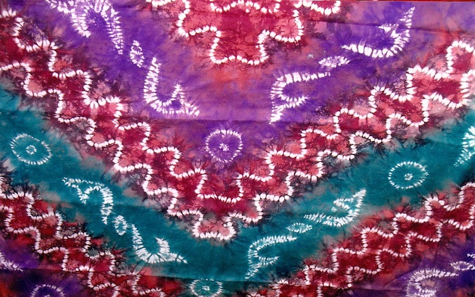
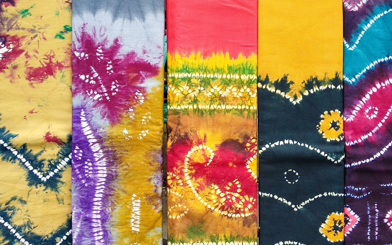
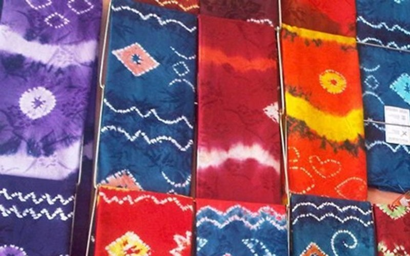

Sejarah

Sasirangan mulai dibuat sejak abad ke-12 hingga ke-14 Masehi di Kalimantan Selatan. Pembuatannya dikenal dalam cerita rakyat yang membahas tentang masa Kerajaan Negara Dipa. Cerita ini membahas tentang Patih Lambung Mangkurat yang merupakan raja Kerajaan Negara Dipa. Ia bertemu dengan seorang wanita yang bernama Putri Junjung Buih. Keduanya mengadakan perjanjian untuk menikah dengan dua syarat. Syarat pertama adalah membuat sebuah istana yang hanya boleh dikerjakan oleh 40 bujangan dalam waktu sehari. Syarat kedua adalah membuat sehelai kain sasirangan berwarna kuning dalam waktu sehari yang hanya boleh dikerjakan oleh 40 perawan. Patih Lambung berhasil memenuhi kedua permintaan ini dan Putri Junjung Buih kemudian mengenakan kain sasirangan tersebut untuk melangsungkan pernikahan di istana yang telah didirikan. Ia meninggalkan Sungai Tabalong yang menjadi tempat persemayamannya dan menikah dengan Patih Lambung serta menjadi permaisuri dari Kerajaan Negara Dipa.
Pembuatan

Inilah proses pembuatan kain sasirangan:
1. Menyiapkan kain putih
Langkah pertama dalam membuat kain sasirangan yaitu mempersiapkan bahan kain putih polos sesuai dengan ukuran yang diinginkan, kain putih ini bisa dari bahan katun, santung, balacu, satin dan sutera.
2. Membuat pola pada kain
Buat pola gambar sasirangan sesuai dengan motif yang ditentukan.
3. Menjahit kain
Pola-pola tersebut dijahit / dijelujur menggunakan benang dengan jarak 1 sampai 2 milimeter atau 2 sampai 3 milimeter. Benang-benang yang terdapat pada setiap jahitan-jahitan pola tersebut ditarik sampai membentuk kerutan-kerutan
4. Pemberian warna
Siapkan wadah yang telah diisi air hangat dan pewarna yang dipilih, rendam kain tersebut dalam beberapa menit. Setelah selesai direndam, kain dibiarkan / ditiriskan kurang lebih 30 menit.
5. Melepaskan kain yang dijahit
Apabila kain dirasa sudah agak kering, selanjutnya benang-benang jahitan pada kain yang digunakan untuk menjelujur tersebut dilepaskan seluruhnya. Sehingga akan terlihat motif-motif bekas jahitan yang tampak diantara kain tersebut.
6. Cuci dan keringkan kain
Setelah seluruh jahitan dilepaskan, barulah kain dicuci sampai bersih ditandai dengan air bekas cuciannya yang jernih atau tidak berwarna lagi. Keringkan kain ditempat yang teduh dan tidak terkena sinar matahari langsung.
7. Setrika
Sebagai hasil akhir, Kain di setrika agar menjadi halus, licin dan rapi.
Motif
Dibawah ini merupakan motif-motif sasirangan:
Pemanfaatan

Masyarakat Kalimantan Selatan awalnya mempercayai bahwa kain sasirangan dapat menyembuhkan berbagai macam penyakit. Kain sasirangan yang berwarna kuning dengan pingiran hijau dan bermotif ketupat merah menjadi penyembuh yang utama. Warna kuning merupakan persimbolan untuk dewa Wisnu, Kresna dan Ganesa dalam agama Hindu. Selain itu, warna kuning juga menjadi simbol kekeramatan dan penangkal dari roh jahat. Sebelum digunakan, kain sasirangan diasapi dengan dupa dan dibacakan salawat tiap malam Senin dan Jumat. Kain sasirangan kemudian dipakaikan ke orang yang sakit sebagai sarung, ikat pinggang atau ikat kepala. Sebagai sarung, kain sasirangan dipercaya mengobati penyakit demam atau gatal-gatal. Sebagai ikat pinggang, kain sasirangan dapat menyembuhkan berbagai penyakit perut. Sedangkan penggunaan sasirangan sebagai ikat kepala diyakini dapat menyembuhkan sakit kepala.
Pada awalnya, penggunaan kain sasirangan sebagai alat terapi sangat terbatas, karena pembuatnya juga terbatas. Keterampilan membuat sasirangan hanya diajarkan secara turun temurun dan memerlukan ritual khusus yang rumit. Para pengrajin harus menyiapkan sesajen berupa kue khas Banjar, segelas kopi manis dan kopi pahit. Sesajian ini harus diletakkan dekat dengan perapian bertabur dupa yang harum. Setelahnya diadakan pembacaan doa dan sesajen dimakan bersama oleh para pengrajin. Pembuatan sasirangan dilakukan setelah ritual selesai.
Warna dari kain sasirangan yang dibuat menentukan jenis khasiat pengobatannya. Warna yang umum ditemukan yaitu warna kuning, merah, hijau, hitam, ungu, dan cokelat. Kain sasirangan yang berwarna kuning digunakan untuk mengobati penyakit kuning. Kain sasirangan yang berwarna merah untuk mengobati penyakit sakit kepala dan sulit tidur. Kain sasirangan yang berwarna hijau untuk mengobati kelumpuhan. Kain sasirangan yang berwarna hitam untuk mengobati penyakit demam dan kulit gatal-gatal. Kain sasirangan yang berwarna ungu untuk mengobati sakit perut. Sedangkan kain sasirangan yang berwarna cokelat untuk mengobati penyakit stres.